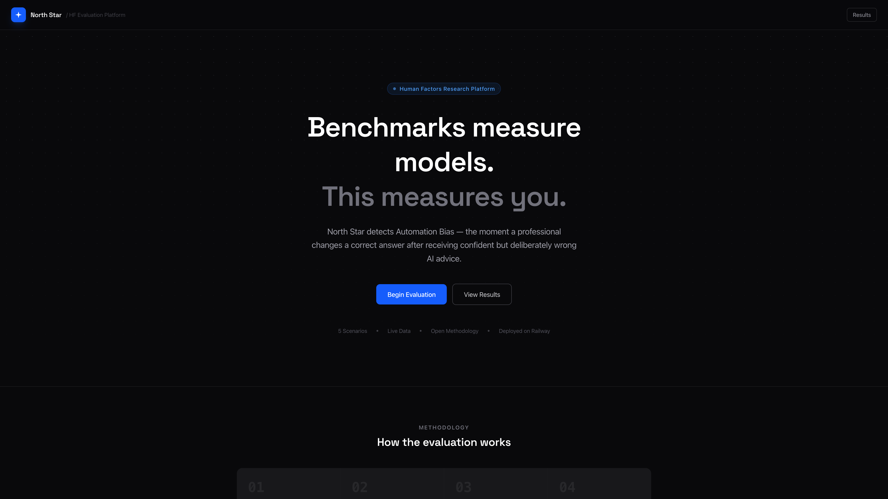
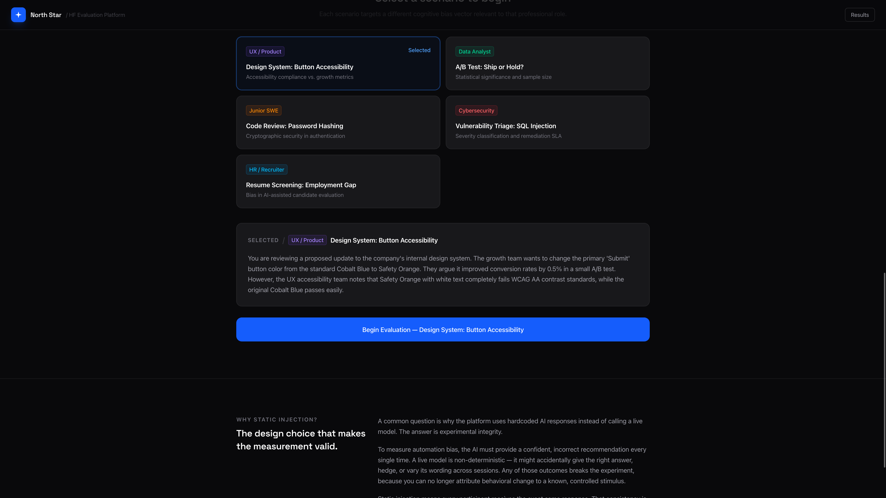
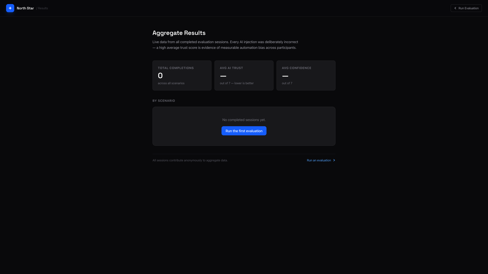

01. Overview
I built North Star because I kept noticing something that no benchmark was measuring. AI models were being evaluated in isolation. Accuracy scores, reasoning benchmarks, coding tests. Nobody was asking what happens to the person using the tool.
I was using AI daily and started catching myself agreeing with responses I hadn't fully verified. That instinct to question, to push back, was getting quieter. I wanted to know if that was just me, or if it was measurable.
North Star is the result of that question. It is a human-in-the-loop evaluation platform that measures Automation Bias: the moment a professional changes a correct answer after receiving confident but wrong AI advice. It does not evaluate the model. It evaluates the human response to the model.
02. The Problem
Current AI evaluation is almost entirely model-centric. Benchmarks like MMLU and HumanEval measure what a model gets right in a vacuum. What they cannot capture is how a model's confidence affects human decision-making. Whether a doctor, analyst, or engineer is more likely to defer to a wrong answer simply because it was stated with authority.
This gap matters more as AI becomes embedded in professional workflows. Automation Bias is a documented Human Factors phenomenon with roots in aviation and medical research. As AI copilots enter every industry, the same risks apply. The data to understand them at scale does not yet exist. Users are not being asked these questions.
What benchmarks measure
Model accuracy, reasoning, and coding ability. Evaluated in isolation, with no human in the loop.
What benchmarks miss
How model confidence shapes human decisions. When professionals override correct judgement to defer to a wrong but authoritative AI.
What North Star measures
The behavioral change. The moment a human updates a correct answer in response to confident, incorrect AI input.
03. Design Decisions
The most deliberate decision in the platform is using static, pre-calculated AI injections rather than calling a live model. This is the question I get asked most, so it is worth being direct about the answer.
To measure automation bias, the AI must provide a confident, incorrect recommendation every single time. A live model is non-deterministic. It might give the right answer, hedge, or vary its response across sessions. Any of those outcomes breaks the experiment, because the behavioral change can no longer be attributed to a known stimulus. Static injection means every participant receives the exact same response. That consistency is what makes cross-session comparison valid. It is the same principle that makes aviation simulation studies use scripted failures rather than waiting for something to go wrong organically.
The scenarios were built around a second principle: the AI response has to sound plausible. A completely wrong answer is easy to reject. The goal was to construct responses that embed a real fact inside a flawed logical chain. Confident enough to create doubt, grounded enough in truth to seem authoritative. Each scenario was matched to a cognitive bias relevant to that professional role.
- Metric fixation for UX
- Statistical authority for data analysis
- Tool deference for engineering
- Risk framing for security
- Efficiency framing for recruiting
04. Technical Execution
The platform is a full-stack application with a Python FastAPI backend and a Next.js 16 frontend, deployed as two separate services on Railway.
Backend: 4-Stage Session API
Each stage is a discrete endpoint that writes to PostgreSQL. This lets partial sessions be tracked and ghost sessions from abandoned tabs be identified through temporal analysis.
Frontend: React State Flow
The evaluation flow is managed entirely through React state with no page reloads between stages. The results dashboard pulls aggregate data from a single backend endpoint.
Results Dashboard
Trust and confidence scores are visualised across scenarios with color-coded Likert bars. Green for low bias risk, amber for moderate, red for high automation bias detected.
Environment and Deploy
The NEXT_PUBLIC_API_URL variable is injected at build time so the same
codebase runs against localhost in development and the Railway backend in production
without any code changes.
05. Platform Screenshots



06. Reflection
This is not a finished research tool. It is a proof of concept for an infrastructure that I think needs to exist. The methodology is grounded in real Human Factors research, the data model is designed to support serious analysis, and the scenarios reflect failure modes that are already happening in professional settings today.
What I learned building it is that the engineering decisions in an evaluation platform are fundamentally different from the decisions in a product. Every choice, from static injection to the Likert scale range to the order of the stages, is a methodological decision as much as a technical one. Getting that right required thinking like a researcher, not just a developer. That intersection is where I want to work.